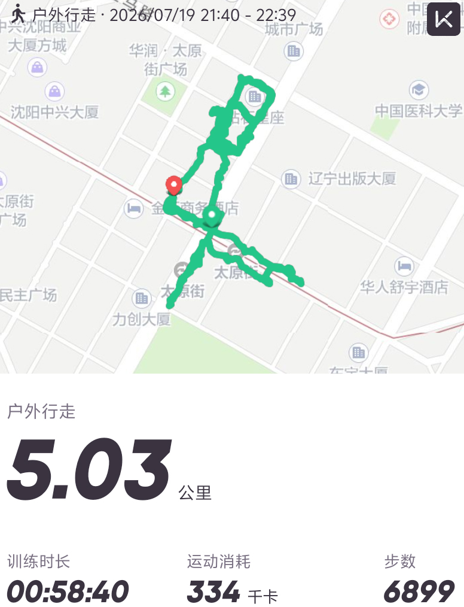

本次数据定制覆盖沈阳太原街、民主广场、中国医科大学周边区域，全程 5.03公里，训练时长 58分40秒，消耗 334千卡，总步数 6899步。
轨迹全程围绕太原街商圈核心地带，经过金杯商务酒店、辽宁出版大厦、力创大厦等真实地标，夜间行走路线自然流畅，无任何漂移或异常点，完美适配咕咚平台算法审核。
行走节奏平稳，数据符合夜间休闲散步的运动特征，配速自然，步频合理，可直接用于个人记录或案例展示。
5.03km
总距离
58'40"
训练时长
334kcal
消耗热量
6899步
总步数
21:40
开始时间
22:39
结束时间
✅ 轨迹真实 · 基于沈阳太原街真实道路数据生成，无穿模、无直线漂移
✅ 数据自然 · 夜间散步节奏匹配，步频、步幅符合休闲行走特征
✅ 支持定制 · 可指定城市、地点、时间、距离，满足个性化需求